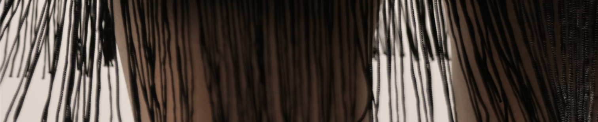
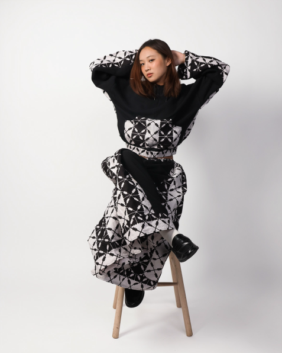
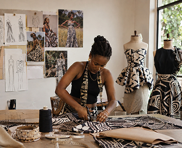
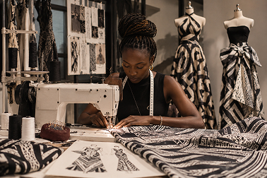
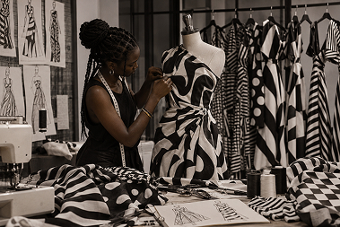
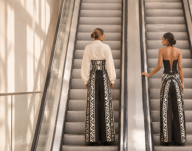

Tanza by Shaz is clothing made to be worn, loved, and lived in.
Every piece starts from fabric that already exists: deadstock cotton or linen,
vibrant Ankara/Kitenge, and textile waste that would otherwise go unused.
We turn it into designs with personality, shape, and attitude.
My pieces are designed to move with you. Waistbands adjust, cuts forgive,
and silhouettes stay flattering whether your body is having a good day, a
bloated day, or a different season of life altogether. Clothes should fit the
person you are right now, you shouldn't fit the clothes.
Everything is made in small batches in Kenya, by skilled hands, and released
as preorders and made-to-order collections. That means less waste, no
overproduction, and pieces made with care instead of in bulk.
Tanza is Swahili for to care for, to cherish. That's the whole idea: care for the
people who make the clothes, for the materials, and for the person wearing
them.

Hey you, I'm Shaz, the designer behind Tanza. I'm half Danish and half Kenyan, raised in Kenya and now based in Copenhagen. I grew up between two worlds, and that mix shows up in everything I make: bold prints and clean lines, warmth and restraint, Nairobi color and Scandinavian ease, a fusion of comfort and style. I started Tanza because I wanted clothes that felt like me: expressive, comfortable, and adjustable enough to keep up with real life. I couldn't find them the way I wanted them, so I started making them. What began as custom designed hair accessories and one of a kind design pieces, has grown into a designer-led clothing brand, with each collection made in Kenya from materials that already exist. I believe good fashion doesn't need a lecture. It needs great design, good fit, and a story you're proud to wear. Thank you for being part of mine.



